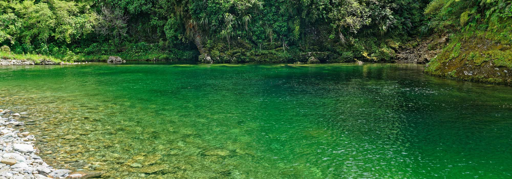
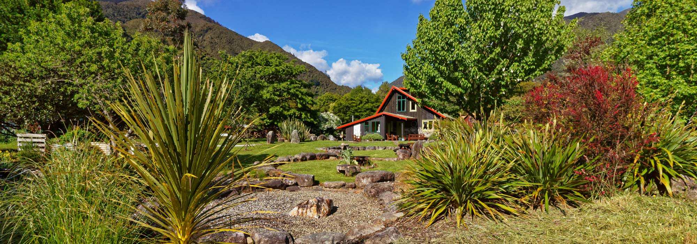
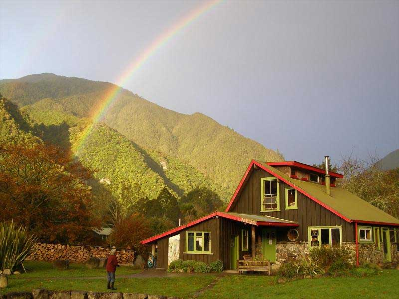
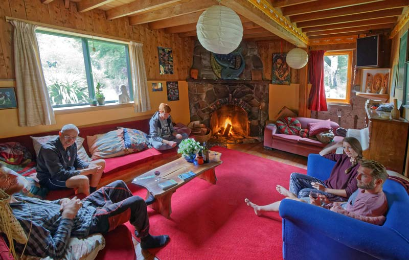
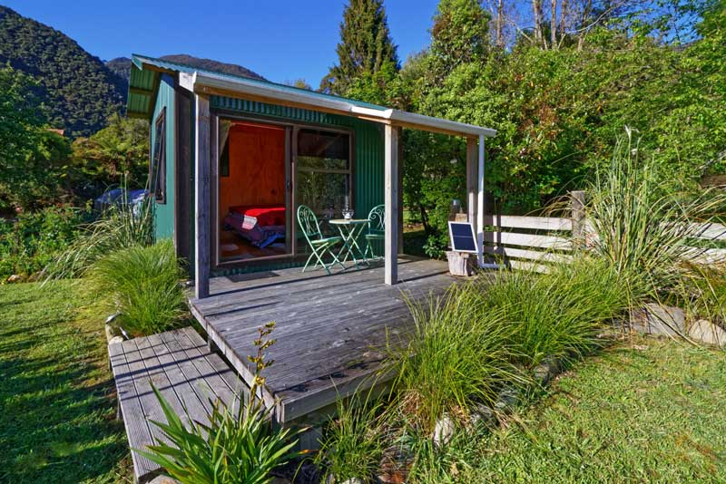
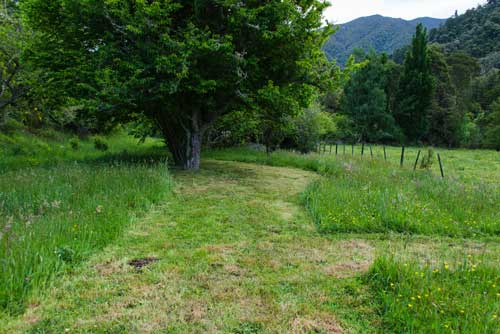
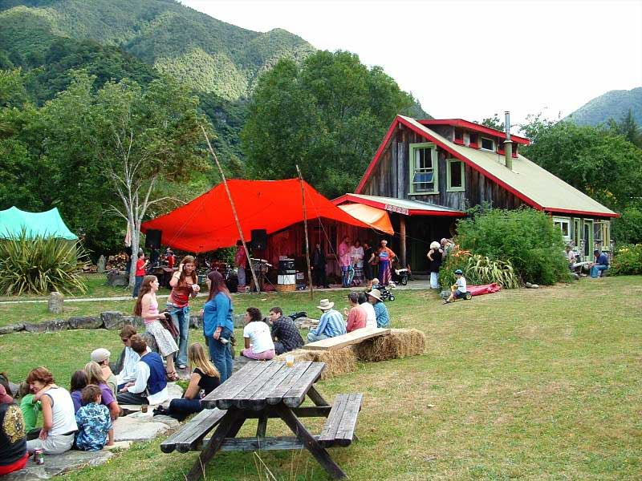
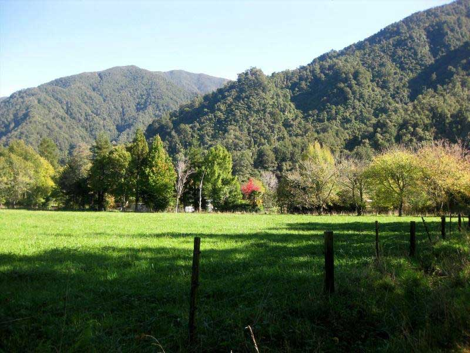

Just a stroll away
Follow the river.
Find a quiet spot by the Anatoki, cool off in summer, or simply listen to the water.

Anatoki Valley · Golden Bay · Aotearoa
A welcoming community, a peaceful place to stay.
Come slow down in our little corner of the world.
A place, and a way of life
At the end of a quiet country road, between native forest and the Anatoki River, you’ll find Rainbow Valley.
We’re an intentional community with a simple idea: life is richer when we care for the land and share a little of the journey. We’ve been making it our own since 1974.
Get to know Rainbow

A slower kind of stay
Put down your pack, park up the van, or settle into a cosy cabin. There’s more than one way to find your place here.

01 / A warm welcomeA comfortable room, a shared kitchen, and a lounge that invites you to linger.

02 / Your own quiet cornerA little more privacy, a queen bed, and your own deck amongst the greenery.

03 / Under the starsSimple camping for tents and campervans, with the valley all around you.
Our accommodation and campground are seasonal, closed May–October. Please enquire before making the journey.

Many people. One shared place.
Rainbow is home. To families, gardeners, makers, and people from different walks of life. We share the land, look after our farm, and come together for meals, celebrations, and the everyday things.
Our visitors bring their own stories. Sometimes a few days in the valley is the beginning of a lovely connection.
A glimpse of community lifeLeave a little room for wonder
Cool river water. Forest tracks. A good book under a tree. Let the valley set the pace.

Just a stroll away
Find a quiet spot by the Anatoki, cool off in summer, or simply listen to the water.

A little further into the green
Our neighbour is Kahurangi National Park. There’s a whole world of bush to explore.

Right where you are
Take the afternoon as it comes. Sometimes being here is enough.
Before you head our way
It’s a small place, and a personal welcome. Get in touch and we’ll help you plan your time here.
Have another question?We’re at 688 McCallum Road in the Anatoki Valley, about 11 km from Tākaka in Golden Bay. The last 5 km is a narrow gravel road, so take your time. See getting here.
Accommodation and camping are closed May–October. For a stay outside those months, contact us first to check availability and current rates. An enquiry is the best place to start.
Yes, please make contact before travelling. We have limited space in the guesthouse and campground, and we’d hate you to make the journey when we can’t accommodate you.
We welcome enquiries about community visits and volunteering. Please arrange a visit first. For volunteering, tell us a little about your skills, experience, and when you’d like to come. Get in touch.
Your own little corner of Golden Bay
Come for a few nights. Leave with a little more space to breathe.